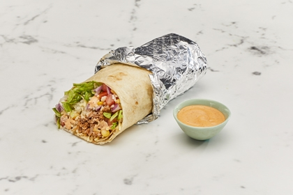
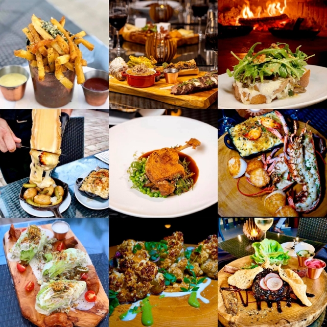
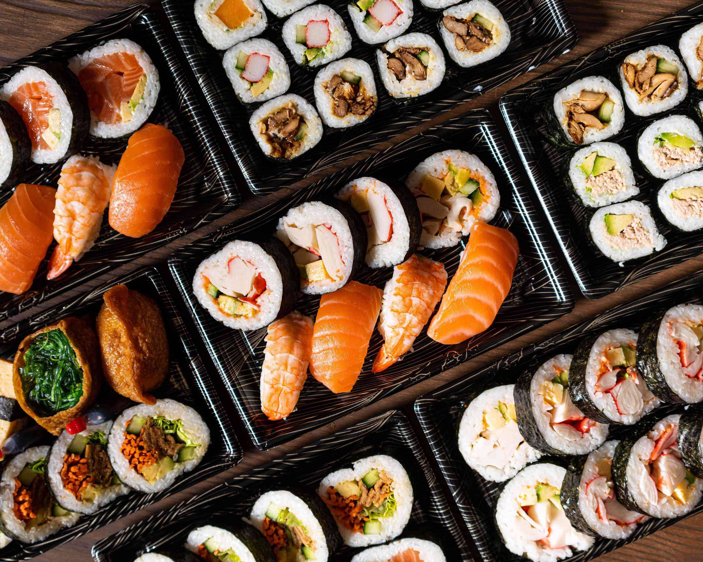
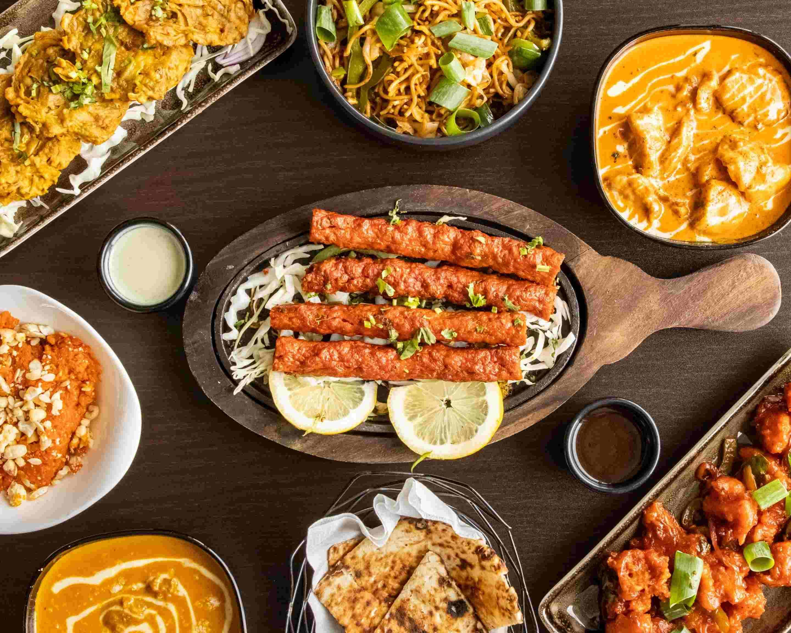
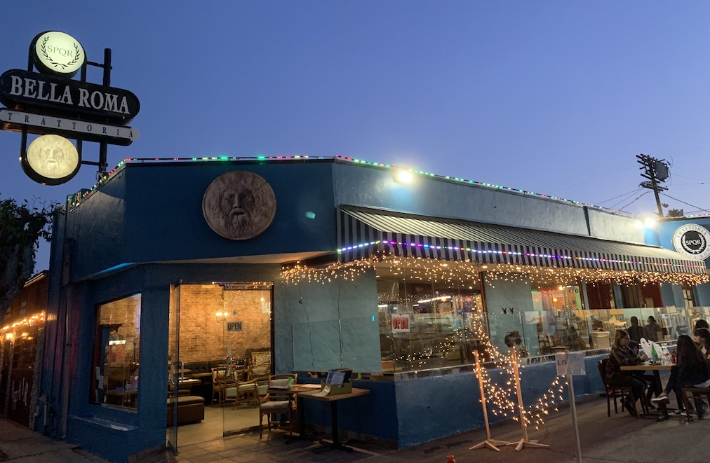
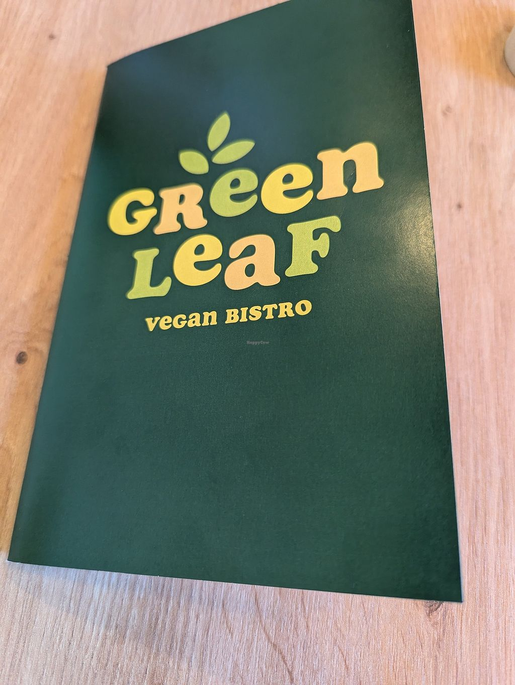

Zambrero Australia
Cuisine: Mexican / Fast‑Casual
Signature Dishes:
- Classic Burrito — $14
- Power Bowl — $16
- Nachos with Guacamole — $12
Deposit: $10
Average Price: $15–$25 per person
Zambrero Australia is a popular fast‑casual Mexican restaurant known for its fresh ingredients,
customisable bowls, and burritos. The menu focuses on healthy, flavourful options with a strong
emphasis on sustainability and community impact. Through its Plate 4 Plate initiative, Zambrero
donates a meal to someone in need for every burrito or bowl purchased. With quick service and a
vibrant atmosphere, it is ideal for students, families, and busy professionals.

Ember & Oak Grillhouse
Cuisine: Modern Australian
Signature Dishes:
- Wagyu Rump Steak — $42
- Smoked Lamb Shoulder — $38
- Charred Corn Ribs — $14
Deposit: $20
Average Price: $35–$55 per person
Ember & Oak Grillhouse specialises in wood‑fired cooking, offering a warm and rustic dining
experience inspired by Australian flavours. The restaurant focuses on premium meats, slow‑cooked
dishes, and seasonal produce sourced from local farms. Guests enjoy a relaxed atmosphere suitable
for families, couples, and small groups. Known for generous portions and friendly service, it is a
popular choice for casual and special occasions.

Sakura Blossom Sushi Bar
Cuisine: Japanese
Signature Dishes:
- Salmon Sashimi Platter — $28
- Dragon Roll — $22
- Chicken Katsu Bento — $19
Deposit: $15
Average Price: $25–$45 per person
Sakura Blossom Sushi Bar offers a fresh and authentic Japanese dining experience with a focus on
high‑quality seafood and traditional flavours. The minimalist décor and calming ambience make it
suitable for dates, solo dining, and small gatherings. Known for beautifully presented dishes and
attention to detail, it is a favourite among sushi lovers.

Spice Route Indian Kitchen
Cuisine: Indian
Signature Dishes:
- Butter Chicken — $21
- Lamb Rogan Josh — $23
- Garlic Naan — $4
Deposit: $10
Average Price: $20–$35 per person
Spice Route Indian Kitchen brings the vibrant flavours of India to life with rich curries,
aromatic biryanis, and freshly baked naan. The restaurant is family‑friendly and offers a warm,
colourful atmosphere perfect for group dining. With generous portions and a wide range of
vegetarian and halal options, it is ideal for diners seeking bold flavours.

Bella Roma Trattoria
Cuisine: Italian
Signature Dishes:
- Spaghetti Carbonara — $24
- Margherita Wood‑Fired Pizza — $20
- Tiramisu — $12
Deposit: $18
Average Price: $30–$50 per person
Bella Roma Trattoria delivers a classic Italian dining experience with handmade pasta, wood‑fired
pizzas, and traditional desserts. The cosy interior and warm lighting create a romantic atmosphere
ideal for date nights and celebrations. Guests appreciate the friendly service, generous servings,
and authentic flavours.

GreenLeaf Vegan Bistro
Cuisine: Vegan / Plant‑Based
Signature Dishes:
- Mushroom Truffle Risotto — $26
- Crispy Tofu Bowl — $18
- Vegan Chocolate Tart — $10
Deposit: $12
Average Price: $22–$40 per person
GreenLeaf Vegan Bistro offers creative and nutritious plant‑based dishes made from fresh,
sustainable ingredients. With its bright interior and eco‑friendly design, it is popular among
health‑conscious diners and students. The menu features hearty mains, colourful bowls, and
indulgent vegan desserts.